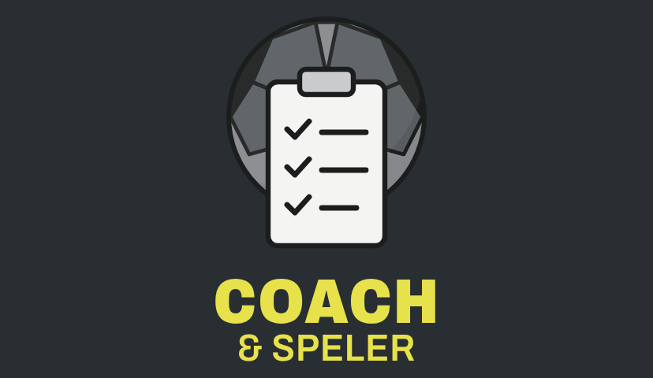
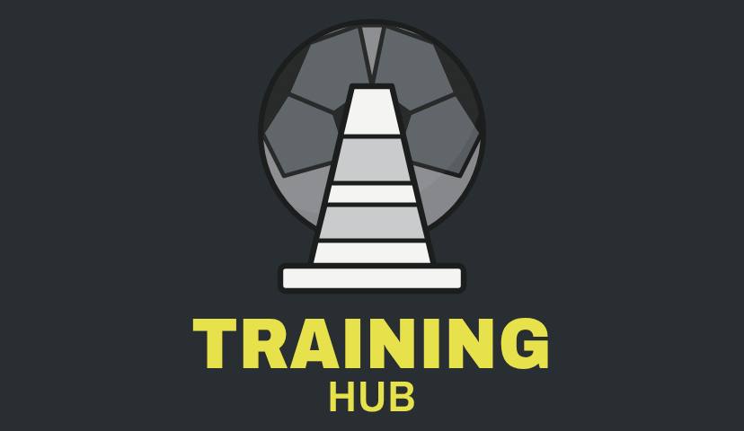
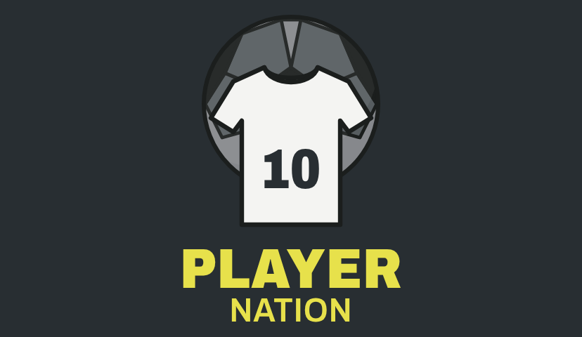

Oefenmatch & Tornooi
Nu openNog geen tegenstander voor zaterdag of tornooi voor de paasvakantie?
Coach & Speler

Je spelerslijst, wedstrijden en evaluaties bij elkaar. Jij kiest categorie, formaat en groepen.
- Spelers en ouders uitnodigen met een code
- Evaluaties na elke wedstrijd
- Voor 5v5, 8v8 en 11v11
Training Hub

Je favoriete oefenvideo's per thema bewaard, plus een gedeelde bibliotheek van andere coaches.
- Links van YouTube, Instagram of TikTok
- Opwarming, techniek, eindspel, keeper…
- Zelf kiezen wat je deelt
ThePlayerNation

Iets nieuws, speciaal voor spelers. Hoe het werkt vertellen we je binnenkort.
wordt vervolgd